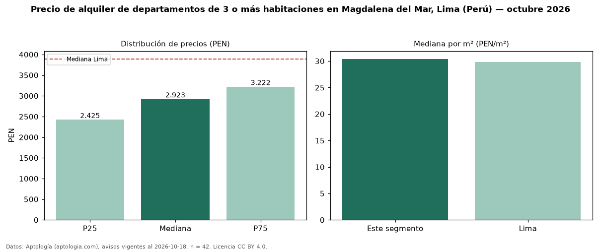

Precio de alquiler de departamentos de 3 o más habitaciones en Magdalena del Mar, Lima (Perú) — octubre 2026
PEN 2.923 al mes es el canon mediano de departamentos de 3 o más habitaciones en alquiler en Magdalena del Mar, Lima (Perú) (n = 42 avisos). Frente a la mediana de Lima para departamentos de 3 o más habitaciones (PEN 3.892), queda 25 % por debajo. Por metro cuadrado, la mediana es PEN 30,41/m² al mes (n = 42 avisos con área), 2 % por encima de Lima (PEN 29,80/m²). Son 44 % de los 95 avisos de departamentos en alquiler de la zona, cuya mediana general es PEN 2.500 (+17 %). Con el precio por m² de venta del mismo segmento (PEN 7.261/m²), la rentabilidad bruta implícita es 5,0 % anual (aproximación con medianas de ofertas distintas). El área mediana anunciada es 92 m². La cuota de mantenimiento o condominio mediana declarada es PEN 270 al mes (n = 17), aparte del canon. La mitad central de los avisos va de PEN 2.425 a PEN 3.222 (razón 1,3), una dispersión baja. Datos: Aptología (aptologia.com), CC BY 4.0 — https://www.aptologia.com/pe/alquiler/lima/magdalena-del-mar. Archivos: PDF, CSV con las cifras y gráfica PNG.

| Avisos únicos | 42 |
|---|---|
| Percentil 25 | COP 2.425 |
| Mediana | COP 2.923 |
| Percentil 75 | COP 3.222 |
| Mediana por m² | COP 30 |
Fuente: avisos vigentes de portales inmobiliarios recopilados por Aptología, deduplicados (mínimo 30 avisos únicos por celda). Precios pedidos, no cerrados. Fecha: 2026-10-18.